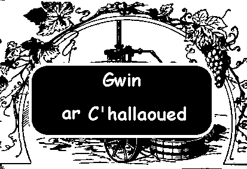
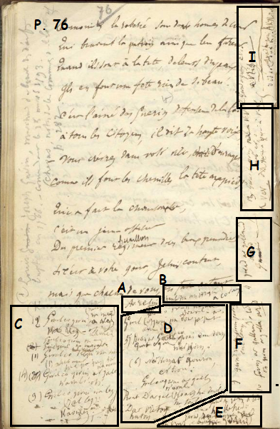
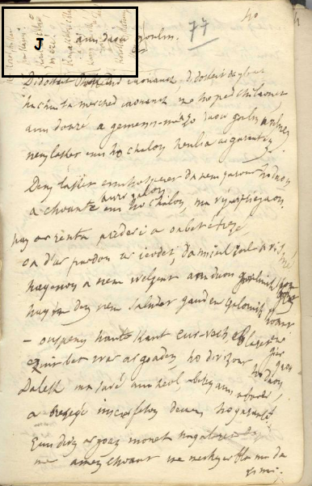
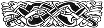

1. Gwell eo gwin gwenn barr na mouar
Gwell eo gwin gwenn barr!
(2 wech)
Tan, tan, dir o dir,
Tan, tan, dir ha tan, tan, tann!
Tir ha tonn, tonn, tann
Tir ha tir ha tonn!
2. Gwell eo gwin nevez oh! na mez!
Gwell eo gwin nevez!
(2 wech)
Diskan
3. Gwell eo gwin a lufr Oh! na kufr!
Gwell eo gwin a lufr!
4. Gwell eo gwin ar Gall nag aval
Gwell eo gwin ar Gall!
5. Gall, dit kef ha deil, dit pezh-teil
Gall, dit kef ha deil!
6. Gwin gwenn dit Breton a galon!
Gwin gwenn dit, Breton!
7. Gwin ha gwad a red a-gevred!
Gwin ha gwad a red!
8. Gwin gwenn ha gwad ruz ha gwad druz.
Gwin gwenn ha gwad ruz
9. Gwad ruz ha gwin gwenn, un awen!
Gwad ruz ha gwin gwenn
10. Gwad ar C'hallaoued eo a réd;
Gwad ar C'hallaoued!
11. Gwad ha gwin evis er gwall vrizh,
Gwad ha gwin evis.
12. Gwin ha gwad a vev neb a ev
Gwin ha gwad a vev!
(2 wech)
Tan, tan, dir o dir,
Tan, tan, dir ha tan, tan, tann!
Tir ha tonn, tonn, tann
Tir ha tir ha tonn!

|
  |
Page 76
[A] Ar resin [B](chanté par un ivrogne) à Coray [MOITIE GAUCHE] [C] (2) Gwel eo gwin na nez ( na mez) (nevez) Na Mez oh ( Gwel eo gwin na mez! Neb a gar (1) Gwel eo Rezin na mar (1) O heb mar (4) n’aval! oh! (9) Gwel eo gwin na lez (D’al lez) kaoulez; [MOITIE DROITE] [D] gwel eo gwin na mel na dour vel-ho Gwel (eo) gwin na dour per put D’an dud (5) Gwin ar Gal, (éo) gwin em dorn gant gorn na gorn, O (6) Na kornat gouron, er bron : Gwel eo gwin ar gall, n'aval Koat D’ar gal (koat) ha deil ha teil Resin D’ar Vreton... ha ton [P. 76, ANGLE EN BAS A DROITE] [E] (a) Gwad ha gwin a red ha kefred (b) Gwin gwenn ha gwad ruz ha druz [MARGE DROITE VERTICALEMENT] [Colonne 1] [F] 9 Gwad ru ha gwin gwen, eul lenn 10 Gwin ar Gallaoued a red oh gwin ar gall a red [Colonne 2] [G] 11 gwad ar gallaoued a red! [Colonne 3] [H] 13 Gwad ha gwin na vev neb ev, o A vev... oh gwad a gwin à vev. page 77 / 40 [MARGE SUPERIEURE] [I] [débordant sur p.76] 12 Gwad a gwin evis e vriz ____________________ Gwad ha gwin a vez ha koroll ann holl ; did éol' a un te eo [SUR PAGE 77] [J] Ha korol, ha kan ha kann ! Koroll ar c'hlezé 'nn eze ! Kan ar c'hlezé c'hlaz a laz. Kann ar c'hlezé c'houé roué Korollomp,kanomp, kannomp ! |
Page 76
[A] Le raisin [B] chanté par un ivrogne à Coray. [MOITIE GAUCHE] [C] (2) Mieux vaut vin qu'hydromel (nouveau) Qu'hydromel, O [LV traduit "mez" par "bière"] Mieux vaut vin que mûre [ Chacun aime (1) Mieux vaut raisin que mûre (1) O, sans doute. (4) Que la pomme! O! (9) Mieux vaut vin que lait Que le lait Caillé. [MOITIE DROITE] [D] [Mieux vaut vin que miel Qu'eau de miel [hydromel] O! Mieux vaut vin qu'eau de poire imbuvable Pour les gens. (5) (C'est) du vin français (qui est) dans ma main Avec (ma) pipe (Ma) pipe, O (6) (Qu')une mâle (?) pipée dans la poitrine : Mieux vaut le vin du Français, Que la pomme (le cidre?) Le bois pour le Français (bois) et les feuilles et le fumier. Le raisin pour le Breton à flots [P. 76, ANGLE EN BAS A DROITE] [E] (a) Sang et vin coulent de concert (b) Vin blanc et sang rouge Et dru [MARGE DROITE VERTICALEMENT.] [Colonne 1] [F] 9 Sang rouge et vin blanc, un lac 10 Le vin des Français coule Oh le vin des Français coule [Colonne 2] [G] 11 Le sang des Français coule [Colonne 3] [H] 13 Sang et vin quiconque vit en boit, O Vivra...oh sang et vin vivra. page 77 / 40 [MARGE SUPERIEURE] [I] [débordant sur page 76] 12. J'ai bu le sang et le vin Jusqu'à l'ivresse ____________________ Il y a le sang, le vin Et la danse de tous Pour toi, soleil et c'est un jour [SUR LA PAGE 77] [J] Et danse, et chant et bagarre! Danse de l'épée en cercle [traduction du Barzhaz] ! Chant de l'épée grise qui tue. Combat de l'épée sauvage, Roi. Dansons,chantons, Battons-nous! |
Page 76
[A] "The grape" [B] sung by a drunkard in Coray. [LEFT HALF] [C] (2) Better grape wine than mead (new wine) Than mead, O [LV translates "mez" as "beer"] Better grape than blackberry [ Everyone likes (1) Better grape than blackberry (1) O, without doubt. (4) Than cider, O! (9) Better wine than milk Than milk, Than curds. [RIGHT HALF] [D] [Wine is better than mead That "honey water" [mead] O! Better wine than undrinkable pear brandy For humans. (5) (There's) French wine (in my) one hand And in the other (my) pipe My pipe, O (6) Just a thorough whiff (?), in my chest: Better French wine, Than apple wine For the French wood and leaves and manure. Grape wine for the Breton flowing in streams [P. 76, BOTTOM RIGHT ANGLE] [E] (a) Blood and wine flow together (b) White wine and red blood A heavy stream. [RIGHT MARGIN VERTICALLY.] [Column 1] [F] 9 Red blood and white wine, a flowing lake 10 The wine of the French flows O the wine of the French flows [Column 2] [G] 11 The blood of the French [Column 3] [H] 13 Blood and Wine alive in one drink, O They shall live ... o forever shall live. page 77/40 [UPPER MARGIN] [I] [overflow on page 76] 12. I drank blood and wine Until drunkenness ____________________ Here are blood and wine And everyone dances For you, sun and the new day [ON PAGE 77] [J] Everyone dances, and sings and fights! Sword dance in a "circle" [as translated in the Barzhaz] ! Song of the Gray Sword the stabbing sword. Wild fighting sword, You're a king. Let us dance and sing, and fight! |
